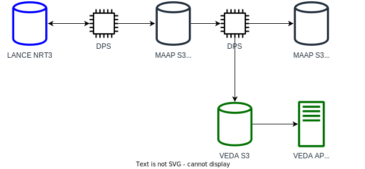

NRT System Architecture
In addition to the core FEDS algorithm, the team maintains a production system to track current fires in near-real time (NRT). This data is made available on our API. It ingests fire detection data from the VIIRS sensors on Suomi-NPP and NOAA20 satellites, runs the FEDS fire even tracking algorithm forward to account for these new observations, and outputs the updated data to the API.
This documentation describes the technical architecture of the production system, primarily for the benefit of our development team and partners.
Overview

Data flows through the system from left to right. The LANCE NRT3 server provides low-latency access to incoming satellite data.
TODO: details on what collections we take from.
All of the computational tasks are completed as jobs on the NASA-ESA Multi-Mission Algorithm and Analysis Platform’s Data Processing System: the DPS, for short. We use GitHub Actions to schedule and submit jobs to the DPS, as detailed in the next section.
Scheduled Jobs
At a high level, regularly scheduled jobs check for new NRT data from the LANCE server, then save it to the FEDSinput/ folder on our gsfc_landslides MAAP S3 shared bucket. This data is preprocessed, then stored in FEDSpreprocessed/NOAA20 or FEDSpreprocessed/SNPP, depending on its source.
Twice a day, at 15:25 and 23:25 UTC, each scheduled region is run through the main FireForward algorithm to incorporate any new observations. The outputs from these runs are saved to FEDSoutputs-v3/ and copied to the VEDA S3 bucket (TODO- link to docs for feature API). This triggers a workflow that makes the outputs available on the VEDA API. (TODO link).
Manual Jobs
See How To Run A New Region for information about how you can manually create data for a new region or time period.
Actions
We use GitHub Actions to drive the process of scheduling and submitting all computations in our production system, as well as for testing, releasing, and deploying our code. Below, we give explanations for each Action, which are in turn called by Workflows. Together, these Workflows coordinate the production system.
run-dps-job-v3
In a container based on the vanilla MAAP image (so that the maap Python package is available), run submit-dps-jobs.py. This calls the MAAP API and submits a job with the passed parameters.
Note that when we submit a job to DPS, we include an algorithm version tag (github_ref) in addition to the algo_name parameter. This tells DPS which specific prebuilt image to use for that job. The version of the fireatlas code that is used in a particular image will always be the version it was originally built with, even if more commits have been made to the repo in the meantime.
This is important! See Releasing for more information.
Most of our workflows use this action to submit different combinations of input parameters to the DPS.
Once DPS has created a container using the tagged image, it runs the run_dps_cli.sh script. Depending on the arguments passed, this will trigger one of:
FireRunDaskCoordinator.pyFireRunDataUpdateChecker.pyFireRunPreprocessRegion.pyFireRunByRegionAndT.pyFireRunFireForward.py
FireRunDaskCoordinator.py is the main coordinating program, and is where most users should start if attempting to run FEDS locally. In practice, it is also usually what runs on DPS.
alert-on-failed-dps-jobs
This action spins up a container using the base MAAP image, uses the MAAP API to check if any jobs by certain users have failed in the past hour. If any have, the action lists them out and fails.
release
See Releasing for more information.
Workflows
schedule-alert-failed-dps-jobs
Runs the alert-on-failed-dps-jobs action every hour. If a failure is detected, sends a notification to the #fireatlas-alerts channel in our Slack workspace. (This is neccessary because only the GitHub account that initiated the workflow will recieve an email notification if it fails.)
manual-v3
Used to kick off a one-time run on the production system. Useful for archival data generation and testing new features or datasets. See How To Run A New Region.
pytest
Uses pytest to automatically run test suite on any PR or pull to the main conus-dps branch. These include several integration tests that only run with the --runslow flag. These tests are slower and can take ~15 minutes to run.
Note that one static landcover file for testing currently lives on the EIS-SMCE S3 public bucket s3://eis-fire-public, as the GitHub Actions runner does not have permission to read landcover data from our private MAAP S3 bucket.
schedule-{region}-nrt-v3
Ongoing jobs that update fire perimeters in the specified regions twice per day.
release
See Releasing for more information.